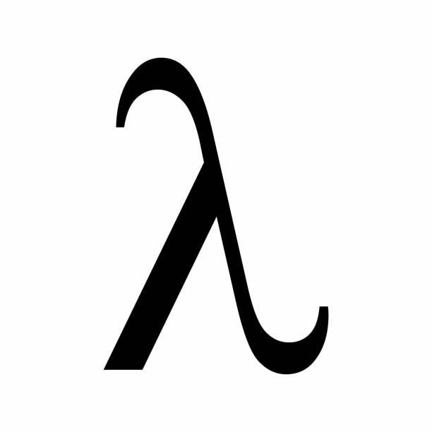
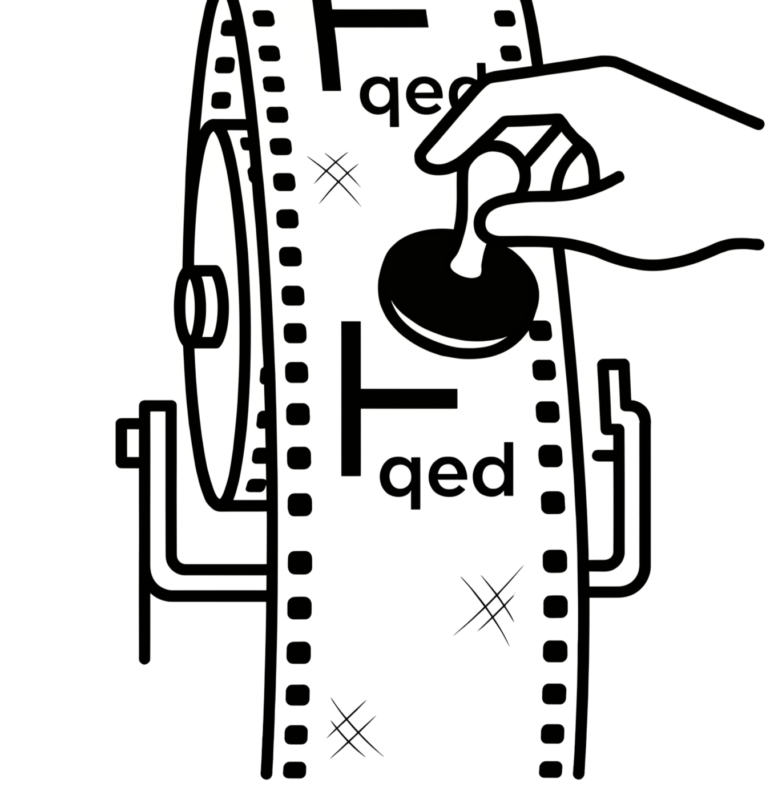
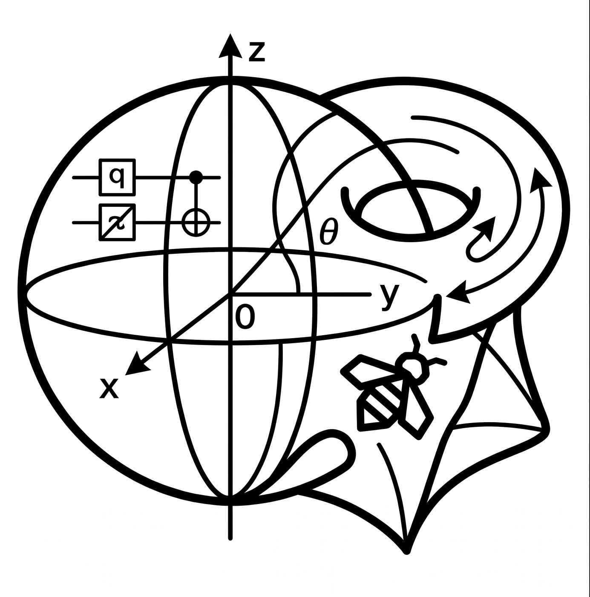

Course Notes
Notes and further reading, organized by module.

MODULE 1
Name TBD

MODULE 3
Name TBD

MODULE 4
The Hype
Quantum Type Theory
SML Bee
Homotopy Type Theory
Tentative Guest Lecture
More Reading: Selinger (2004)
More Reading: The HoTT Book